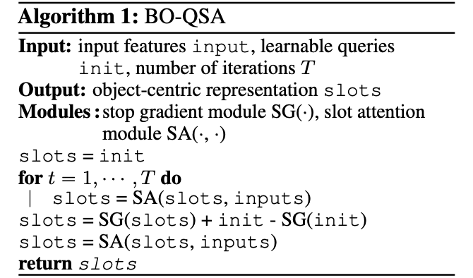

Improving Unsupervised Object-centric Learning with Query Optimization
✶ indicates equal contribution
1UCLA
2Tsinghua University
3Beijing Institute for General Artificial Intelligence (BIGAI)
Abstract
The ability to decompose complex natural scenes into meaningful object-centric abstractions lies at the core of human perception and reasoning. In the recent culmination of unsupervised object-centric learning, the Slot-Attention module has played an important role with its simple yet effective design and fostered many powerful variants. These methods, however, have been exceedingly difficult to train without supervision and are ambiguous in the notion of object, especially for complex natural scenes. In this paper, we propose to address these issues by improving previous attempts that leverage bi-level optimization in Slot-Attention with learnable query initializations and straight-through gradient updates. With simple code adjustments on Slot-Attention, our model, Bi-level Optimized Query Slot Attention, achieves state-of-the-art results on 3 challenging synthetic and 7 complex real-world datasets in unsupervised image segmentation and reconstruction, outperforming previous baselines by a large margin. We provide thorough ablative studies to validate the necessity and effectiveness of our design. Additionally, our model exhibits great potential for concept binding and zero-shot learning. We hope our effort could provide a single home for the design and learning of slot-based models and pave the way for more challenging tasks in object-centric learning.
Overview of BO-QSA
We proposed methods for (1) initializing Slot-Attention modules with learnable queries and (2) optimizing the model with bi-level optimization. With simple code adjustments on the vanilla Slot-Attention, our model, Bi-level Optimized Query Slot Attention, achieves state-of-the-art results on 3 challenging synthetic and 7 complex real-world datasets in unsupervised image segmentation and reconstruction, outperforming previous baselines by a large margin.

Results on real-world datasets
Note: Click the button to select a dataset for result visualization.
Results on synthetic datasets
Note: Click the button to select a dataset for result visualization.
Results on 3D datasets
We trained uORF on 3D datasets with our BO-QSA. The results are shown below. With our method, the slots always bind the same object and our decomposition is more stable.
Room_Chair

Room_Diverse

Bibtex
If you find our project useful, please consider citing us:
@inproceedings{jia2023improving,
title={Improving Object-centric Learning with Query Optimization},
author={Jia, Baoxiong and Liu, Yu and Huang, Siyuan},
booktitle={The Eleventh International Conference on Learning Representations},
year={2023}
}